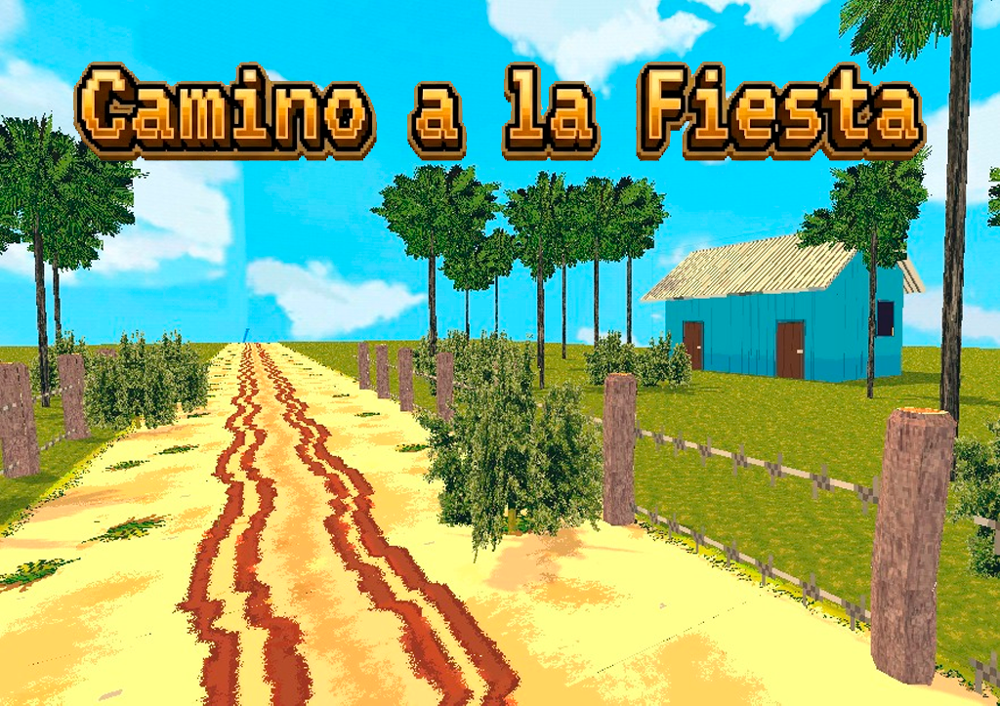

Cargando...
Ubicación
Época
¿Qué sucedió?
Cargando narrativa histórica...
Contexto Histórico
Cargando contexto de la época...

Captura de archivo
Experiencia en el Videojuego
- Cargando hitos del nivel...
Registro de Archivo
RO-000
Origen:
Cargando...
Área:
Cargando...
Fuentes:
Cargando...